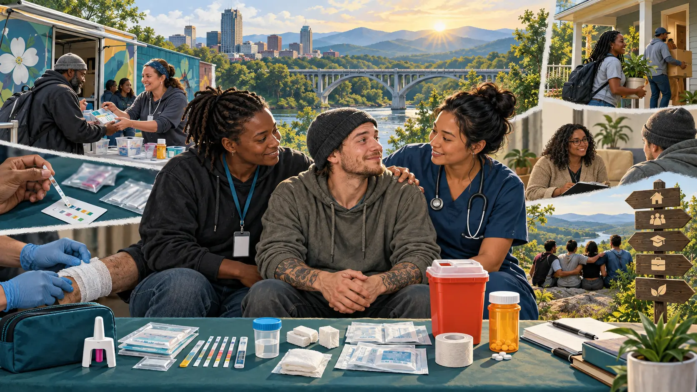

Section 16: Harm Reduction and Drug Policy for the Future
A deep dive into policies that keep people alive, prevent disease, preserve dignity, and create more opportunities for treatment and recovery.
Opening story · A future remains possible
16.1 The Life Saved Before the Life Is Changed

Harm reduction is an ecosystem, not one object: survival, health, housing, trust, treatment, and recovery become possible through connected services.
Imagine that a person overdoses while a friend is nearby. The friend recognizes the signs, gives naloxone, calls 911, and stays. The person wakes, visits a syringe services program, receives wound care and sterile supplies, checks an unpredictable street product, talks with a peer who has lived experience, and later chooses medication treatment. No single contact “fixes” a life. Each one prevents a door from closing.
That sequence captures the logic of harm reduction: reduce the most immediate and preventable harm without requiring abstinence as the price of care. A person must be alive to recover, healthy enough to make choices, and connected enough to receive help. Harm reduction does not claim that drug use is harmless. It responds to the reality that punishment, shame, or an all-or-nothing treatment threshold can allow manageable risks to become fatal ones.
The central policy test: Does an intervention measurably reduce death, infection, injury, and social exclusion—and does it create a practical path to healthcare, treatment, recovery, and stability?
16.2 What harm reduction is
Harm reduction is a public-health and social-service approach that works with people as they are. It treats abstinence as one valid goal, but not the only condition under which someone deserves safety or care. North Carolina describes it as practical strategies that reduce negative consequences across a spectrum from chaotic use to abstinence (NCDHHS).
Meet people where they are
Offer useful help now, even when a person is not ready or able to stop.
Protect autonomy and dignity
Include people with lived experience and avoid care based on shame, coercion, or stereotypes.
Measure outcomes
Track survival, infection, treatment access, housing, safety, equity, and quality of life—not symbolism alone.
16.3 What the evidence supports
Intervention
Immediate purpose
What evidence supports
Naloxone access and overdose education
Reverse opioid overdose and equip likely witnesses to respond.
Community distribution gets a safe, non-addictive reversal medicine to the people most likely to be present. Greater program reach has been associated with lower overdose mortality (CDC).
Syringe services programs (SSPs)
Provide sterile equipment, safe disposal, testing, vaccination, wound care, and referrals.
Comprehensive SSPs are associated with an estimated 50% reduction in HIV and hepatitis C incidence; CDC reports that they do not increase illegal drug use or crime (CDC).
Medications for opioid use disorder
Use medications such as methadone or buprenorphine to reduce withdrawal, craving, illicit opioid use, and mortality.
Medication is treatment, not the substitution of “one addiction for another.” Low-barrier access and continuity after hospitalization or incarceration are key.
Drug checking and risk communication
Identify unexpected fentanyl, xylazine, or other substances and adapt behavior and services.
Testing cannot certify safety, but rapid analysis can reveal a changing illicit supply and guide warnings, wound care, and response (CDC).
Good Samaritan protections
Reduce fear of calling 911 during an overdose.
Legal protection works only when people know it, trust it, and believe police and emergency systems will honor it.
Housing, peers, and low-barrier healthcare
Address the conditions that make use more dangerous and care difficult to reach.
Stable contact makes wound care, infectious-disease services, treatment, food, and recovery support more usable.
Evidence strength is not identical for every intervention or outcome. Programs should disclose uncertainty, monitor unintended consequences, and be redesigned when results do not match their goals.
16.4 Harm reduction in North Carolina
North Carolina law authorizes governmental and nongovernmental syringe services programs and gives them objectives that include reducing bloodborne disease, needlestick injury, and overdose (N.C. Gen. Stat. § 90-113.27). The statewide Safer Syringe Initiative lists current programs and participating counties; its August 2025 directory shows that access exists across the state but is not geographically uniform (NCDHHS).
Naloxone
A statewide standing order allows eligible people and organizations to obtain naloxone from participating pharmacies without an individual prescription. State and community programs also distribute free kits.
Syringe services
Programs provide sterile equipment and disposal while connecting participants to naloxone, testing, vaccination, wound care, medical services, and substance-use treatment.
Treatment access
North Carolina reports increasing enrollment in opioid treatment programs, including mobile services. Harm reduction and medication treatment should function as connected doors rather than competing philosophies.
2,934 overdose deaths in 2024 North Carolina reported a 34% decline from 4,442 deaths in 2023—the first decline since 2019—while emphasizing that the remaining loss is still profound (NCDHHS, 2026). The decline cannot be attributed to one program alone; it is consistent with the value of a combined strategy involving naloxone, treatment, prevention, surveillance, and community services.
16.5 A national strategy—not a single program
Across the United States, harm reduction increasingly appears beside prevention, treatment, and recovery rather than outside them. SAMHSA’s national framework emphasizes engagement, equity, lived experience, evidence, and low-barrier services. CDC supports SSP capacity and treats overdose prevention as a response to a changing drug supply and multiple routes of use.
Prevention
Delay initiation, teach accurate risk, improve mental health, and reduce unsafe prescribing and product exposure.
Harm reduction
Prevent death and disease during ongoing use and build trusted contact with services.
Treatment and recovery
Make evidence-based medications, counseling, housing, employment, and long-term support available without avoidable barriers.
A strong national approach also needs drug-supply surveillance, culturally responsive services, continuity of medication in jails and prisons, post-release overdose prevention, and evaluation that compares policy benefits with financial and human costs.
16.6 Regulation as a Learning System
Prohibition often reveals drug use through its worst outcomes. A learning system gathers evidence earlier and continually changes products, education, healthcare, and regulation.
Illegal drug use is unusually difficult to study. People may conceal use because they fear arrest, stigma, losing employment, losing housing, or losing custody. Researchers may not know the identity, potency, contaminants, dose, or route of an illegal product. Samples recruited from hospitals, treatment programs, jails, or overdose records also overrepresent people after something has gone badly. These limits do not make research impossible, but they affect whose experiences become visible and which questions can be answered.
Reactive evidence arrives late: overdose toxicology, emergency visits, arrests, confiscated products, and crisis interviews are valuable, but they often tell society what happened only after severe harm occurred. The people who used without a crisis—or quietly found a safer pattern—may be missing from the record.
Regulation can make research safer and more informative when it requires standardized products, measured potency, ingredient and contaminant testing, accurate labels, adverse-event reporting, secure packaging, voluntary research access, and privacy-protected sales and health data. It should also require continued evaluation rather than treating legalization or scheduling as the final answer.
Institution
Contribution to the learning cycle
Science
Compare dose, route, frequency, benefits, short- and long-term harms, interactions, and differences across populations.
Medicine and public health
Report benefits and adverse events, identify emerging patterns, protect participants, and translate evidence into care.
Education
Deliver age-appropriate, updated information before use and revise messages when evidence changes.
Regulated producers and businesses
Test ingredients and potency, improve formulation and packaging, maintain records, and comply with recalls and revised safeguards.
Government and communities
Set standards, fund independent research, protect privacy, include lived experience, publish results, and revise policy.
THC shows why the details matter
“Cannabis use” is not one exposure. Smoking, vaping, eating, and dabbing differ in onset, duration, dose interpretation, and possible harms; concentration and product type also vary. CDC has expanded surveillance of routes and patterns so public-health messages can respond to an evolving marketplace (CDC, 2025). The National Academies has likewise called for stronger cannabis policy research, standardized data, and evaluation across different state regulatory systems.
A learning system might respond to evidence by changing serving sizes, THC labeling, child-resistant packaging, contaminant limits, age restrictions, driving guidance, clinician education, or warnings for higher-risk groups. Regulation therefore becomes a cycle: research → standards → education and practice → measured outcomes → revised standards.
Sociological connection: Better evidence depends on trust. Research requirements must protect privacy and informed consent; “required research” should mean that governments and regulated institutions are obligated to fund, permit, and use ethical research—not that every person must surrender personal data as a condition of care or legal access.
But forced disclosure already occurs
Drug testing demonstrates that society already makes access conditional on surrendering identifiable biological information. A person may have to provide urine, blood, hair, saliva, or another specimen to obtain or retain employment, participate in some treatment programs, receive particular medications, comply with probation or court supervision, compete in athletics, or preserve other institutional opportunities. The sample and result are connected to a named person, and refusal may itself trigger exclusion or punishment. Calling the procedure “consensual” does not eliminate the power imbalance when the alternative is losing work, liberty, treatment, or another necessity.
The legal protections are uneven. Records created by many federally assisted substance-use-disorder treatment programs receive special confidentiality protection under 42 C.F.R. Part 2. Yet the EEOC explains that a test for current illegal drug use is not treated as a medical examination under the ADA, and an employer-held result is not automatically protected in the same way as a clinical record. The institution collecting the specimen, the reason for testing, the substances tested, and federal and state law all affect what can be collected, disclosed, or used.
The research-policy contradiction: society frequently accepts compelled, identifiable drug testing for surveillance and control while making voluntary, confidential research on drug effects difficult. A harm-reduction learning system should reverse that priority: minimize coercive testing, collect only information necessary for a legitimate purpose, protect privacy, and make ethical voluntary research easier.
Continue this issue in Section 15: Drug Education and Drug Testing, where students can ask who orders a test, what the result actually proves, who sees it, and what consequences follow.
Unit One connection: Return to Section 7 and ask which method—experiment, survey, interview, ethnography, medical record, toxicology, or natural experiment—could answer a particular question, and whose experience each method might miss. Section 4’s legal classifications should also be treated as policies open to revision when evidence changes.
16.7 Education before risk: knowledge across development
Drug education should begin before exposure and continue every year—not arrive once, after peer stories and social media have already become the curriculum. Developmentally appropriate education does not tell a kindergartner how to use a drug. It begins with what medicine is, why one person’s medicine should not be shared, how to ask a trusted adult for help, and how advertising and peer pressure shape choices. Later lessons can add dose, route, interactions, addiction, consent, impaired driving, unknown pills and powders, overdose response, treatment, and policy.
Developmental stage
Age-appropriate knowledge and skills
Partners
Early childhood and elementary school
Medicine safety, body autonomy, trusted adults, feelings, healthy coping, and the difference between a medicine and a poison.
Families, teachers, school nurses, pediatric clinicians.
Middle school
Nicotine, alcohol, cannabis, medications, peer norms, media literacy, refusal and help-seeking skills, consent, and why an impaired person cannot consent.
Potency, mixing substances, counterfeit pills, driving, overdose recognition and naloxone, sexual safety, treatment options, laws, and consequences for education and work.
Health teachers, clinicians, harm-reduction workers, youth and family organizations.
College and adulthood
Drug checking, safer-use and abstinence plans, medication interactions, workplace rules, bystander response, recovery, and changing local markets.
Healthcare, colleges, employers, community programs, peers with lived experience.
Peers matter because they communicate norms, access, stories, and practical information. That is precisely why education must build health literacy and source-checking, not merely repeat frightening claims. The strongest programs are sustained, interactive, culturally responsive, connected to families and communities, and updated when evidence changes. One assembly or one police visit cannot carry a developmental curriculum.
Drug education and sexuality education belong in conversation. Students need accurate information about intoxication, consent, drug-facilitated assault, coercion, condoms and contraception, and how to help a friend. International guidance on comprehensive sexuality education emphasizes scientifically accurate, age-appropriate, curriculum-based learning; teaching accurate information does not require encouraging either sex or drug use.
16.8 International policy observatory
Countries are not controlled experiments. Definitions, survey ages, drug markets, healthcare systems, poverty, and data quality differ. These cases are therefore policy comparisons, not a scoreboard. Select a country to see what its experience can—and cannot—teach.
The Iceland figures use repeated surveys of 15–16-year-olds and show a striking trend during a broader community-prevention effort. They do not prove that one lesson or law caused the decline. Canada, Portugal, and EU member states likewise require outcome-by-outcome evaluation rather than a single label such as “legalized” or “decriminalized.”
16.9 Regulating emerging products before a crisis
A future policy must address psychoactive products sold through legal retail channels faster than laws and research can respond. Examples include some intoxicating hemp-derived cannabinoids, high-concentration kratom alkaloid products, tianeptine products, nitrous oxide sold for nonmedical purposes, and new synthetic cannabinoids or cathinones marketed with labels such as “not for human consumption.” Legal availability is not proof of safety, while immediate prohibition can recreate an unregulated illicit market.
1. Identify
Use poison-center calls, laboratories, clinicians, surveys, wastewater, product testing, and community reports to detect new products.
2. Set proportionate rules
Require verified ingredients, potency and serving limits, age controls, child-resistant packages, truthful labels, and retailer licenses based on risk.
3. Learn publicly
Require adverse-event reporting, batch traceability, independent research, public alerts, recall authority, and privacy-protected evaluation.
4. Reinvest
Direct fees and taxes toward research, prevention, treatment, harm reduction, enforcement against exploitation, and repair of unequal prior harms.
Rules should differ by product. Caffeine, alcohol, nicotine, cannabis, prescribed opioids, ketamine, and novel synthetics do not have the same dose-response curve, therapeutic value, dependence potential, or market risk. A rational system chooses among ordinary retail, restricted adult retail, pharmacy access, clinician-supervised treatment, research-only access, or prohibition—and revisits the decision as evidence changes.
16.10 Move enforcement toward exploitation and violence
Redirecting resources toward healthcare, housing, education, research, survivor services, and work can repair harms while expanding meaningful participation in society.
Reducing penalties for possession does not mean accepting human trafficking, sexual exploitation, child recruitment, forced labor, kidnapping, firearms offenses, corruption, violent debt collection, or money laundering. Human trafficking is not merely an “ancillary” drug crime: it is a distinct form of exploitation. It can overlap with drug markets when organizations use substances, debt, threatened withdrawal, or addiction to control victims, but the two crimes are not identical.
A transition from an illicit market should also distinguish participants. A low-level, nonviolent seller or producer might qualify for expungement, training, licensing, employment, or a social-equity pathway into a regulated market. An organization using coercion, violence, trafficking, corruption, or laundering should not be converted into a lawful enterprise. Regulators need beneficial-ownership disclosure, background and financial review, worker protections, supply-chain records, independent testing, inspections, and power to deny or revoke licenses.
Reduce criminal-market demand
Create safer lawful access where evidence supports it, make treatment reachable, and avoid convictions that block housing, education, and work.
Protect people, not only borders
Prioritize victim identification, safe housing, trauma care, immigration and legal assistance, education, and employment pathways.
Target the harmful conduct
Focus investigation on violence, coercion, exploitation, corruption, money laundering, weapons, unsafe production, and organized intimidation.
Europol’s study of the EU’s 821 most threatening criminal networks found that 50% were involved in drug trafficking, 86% used legal business structures, 71% engaged in corruption, and 68% used violence or intimidation. The lesson is not that every drug seller is a trafficker. It is that legalization without ownership transparency and anti-corruption safeguards can allow powerful networks to migrate into the legal economy.
16.11 Interactive: Build a future drug policy
A drug knowledge, safety, and care economy can create skilled roles across science, education, medicine, peer support, counseling, regulation, housing, and employment.
Drugs as a field of knowledge, work, and care
Drugs themselves could support a new, connected field of legitimate work. Scientists could study benefits, risks, dose, route, and interactions. Medical professionals could decide when a substance has a useful therapeutic role and help people whose use becomes difficult. Educators could translate changing evidence into practical knowledge. Carefully regulated producers, laboratories, pharmacists, inspectors, data analysts, counselors, peer workers, and recovery employers could make products and systems safer. Government and community organizations could protect privacy, monitor outcomes, prevent commercial abuse, and direct revenue toward research, treatment, education, housing, and survivor services.
This approach does not assume that every drug should be sold freely or that every use is beneficial. It asks society to understand each substance, select the conditions under which its benefits can be used, reduce foreseeable harms, and help people without discarding their capacity to learn, work, care for others, and contribute. The industry’s product would therefore be more than a substance: it would include knowledge, safety, treatment, accountability, and human opportunity.
Move the four controls. The model illustrates tradeoffs; it does not predict exact real-world percentages. A durable policy usually needs all four institutions rather than relying on one.
Policy investment
Illustrative policy profile
—Informed decision capacity
—Product and overdose protection
—Pressure on illicit-market power
—Health and social reintegration
Interpretation rule: a high score means the selected tools reinforce one another. It does not mean harms disappear. Commercial lobbying, privacy, unequal enforcement, stigma, healthcare access, and unintended market adaptation must still be measured.
16.12 Debates students should evaluate
Does help “enable” use? Sterile supplies or naloxone make a dangerous act less likely to end in infection or death; they do not make the underlying drug harmless. CDC reports that comprehensive SSPs do not increase illegal drug use or crime and can connect people to treatment.
Must recovery mean abstinence? Abstinence may be the safest or preferred outcome for many people. Population health can still improve when someone uses less, uses by a less dangerous route, avoids using alone, receives medication, or survives long enough to pursue recovery.
Who defines success? Agencies may count kits or referrals; participants may value survival, dignity, stable housing, family connection, or fewer medical crises. Good evaluation includes both.
What remains uncertain? Fentanyl test strips identify fentanyl but not dose or every contaminant. Drug checking, supervised consumption services, and emerging technologies need outcome-specific evaluation and operate within changing legal environments.
Conflict theory: Harm reduction shifts some authority from police and courts toward healthcare workers, peers, and people who use drugs. Debates are therefore about evidence and about which institutions receive money, legitimacy, and control.
16.13 Watch: Harm reduction in practice
If the embedded player is unavailable, open the video on YouTube. Use YouTube’s captions or transcript controls when available.
Reflection questions
Which harms does the program try to reduce first, and why?
How does trust change what services people will use?
What outcome would demonstrate success after one day, one year, and ten years?
Which parts belong to healthcare, social policy, education, or criminal law?
Closing principle: Harm reduction is not giving up on recovery. It is refusing to give up on a person before recovery becomes possible.
Kristjansson, A. L., Mann, M. J., Sigfusson, J., Thorisdottir, I. E., Allegrante, J. P., & Sigfusdottir, I. D. (2020). Development and guiding principles of the Icelandic model for preventing adolescent substance use. Health Promotion Practice, 21(1), 62–69. https://pmc.ncbi.nlm.nih.gov/articles/PMC6888510/
Centers for Disease Control and Prevention. (2025, April 10). Routes of marijuana use—Behavioral Risk Factor Surveillance System, 22 U.S. states and two territories, 2022. Morbidity and Mortality Weekly Report, 74(12), 193–198. https://www.cdc.gov/mmwr/volumes/74/wr/mm7412a1.htm
National Academies of Sciences, Engineering, and Medicine. (2024). Cannabis policy impacts public health and health equity. The National Academies Press. https://doi.org/10.17226/27766
Wheeler, E., Jones, T. S., Gilbert, M. K., & Davidson, P. J. (2015). Opioid overdose prevention programs providing naloxone to laypersons—United States, 2014. Morbidity and Mortality Weekly Report, 64(23), 631–635. https://www.cdc.gov/mmwr/preview/mmwrhtml/mm6423a2.htm
Content reviewed: September 2026. Laws, services, and data can change; verify current local availability. This educational coursebook does not provide medical or legal advice.